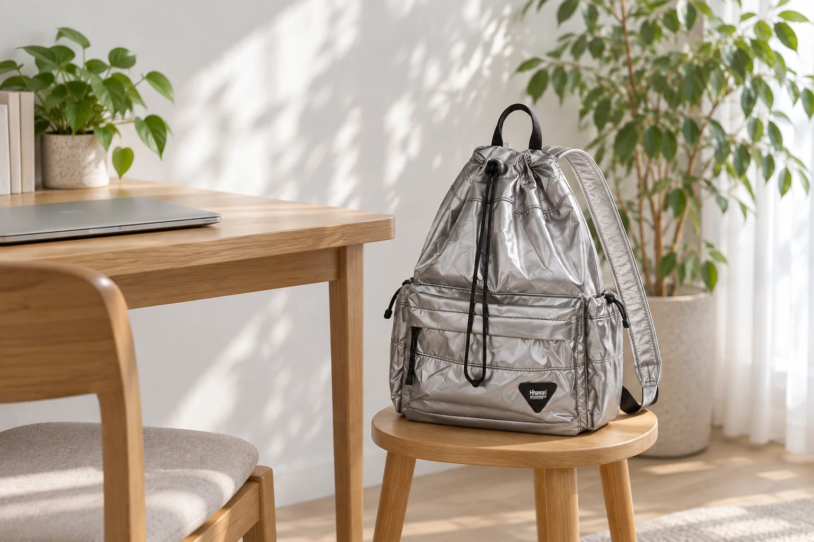

화상 모임 화면에 백팩이 보인다면

집에서 화상 모임에 들어가면 의자 뒤에 둔 백팩도 화면 한쪽에 보일 수 있습니다. 평소에는 신경 쓰지 않던 이름표나 출입증이 카메라를 향해 있을 때도 있습니다. 모임을 시작하기 전 미리보기에서 내 자리와 가방을 함께 살펴보세요. 제품을 화면에 예쁘게 놓는 일보다, 어디까지 보이고 무엇을 꺼낼지 확인하는 데 필요한 준비입니다.
실제로 앉을 자리에서 미리보기를 켭니다
노트북이나 카메라를 사용할 위치에 놓고 모임에 들어가기 전 제공되는 미리보기를 확인합니다. 가방 전체가 보이는지, 의자에 가려졌던 부분이 몸을 옮겼을 때 드러나는지 살펴보세요. 조명이나 카메라 방향을 바꾸면 배경에 들어오는 물건도 달라집니다. 점검하려고 백팩을 책상 모서리에 쌓아 올리지 말고 바닥이나 받침이 안정된 자리를 고릅니다.
개인 표시는 화면 밖으로 옮깁니다
백팩에 본인이 붙인 이름표, 출입증, 교통카드 홀더가 있다면 화면에 보여도 되는 것인지 확인합니다. 노출하고 싶지 않은 표시는 카메라 반대 방향으로 돌리거나, 탈착 가능한 경우 빼서 정한 자리에 둡니다. 원단이나 로고에 테이프를 바로 붙여 가리는 방식은 피하세요. 어떤 표시가 보이는지는 확대된 미리보기에서도 다시 확인합니다.
흐림 효과를 켰어도 가방 위치를 확인합니다
배경 흐림이나 가상 배경을 쓰는 경우에도 적용한 화면을 직접 살펴봅니다. 몸을 옮기거나 가방에 손을 뻗는 순간까지 한 번 움직여보세요. 가방의 일부가 다시 보인다면 위치를 바꾸고 미리보기를 확인합니다. 흐림 설정만 믿고 개인정보가 있는 표식을 카메라 앞에 남겨두지 않습니다. 화면 밖으로 옮긴 물건은 통로를 막거나 전원선 위에 놓이지 않게 정리합니다.
모임 중 쓸 물건을 먼저 꺼내둡니다
노트와 필기구처럼 곧 쓸 물건은 시작 전에 꺼내 책상 한쪽에 둡니다. 중간에 백팩을 들어 올려 통째로 뒤질 일이 줄어듭니다. 모임이 끝나면 떼어둔 개인 표식을 회수하고 다음 외출에 필요한 물건을 가방으로 돌려놓으세요. 사진은 외부 크기 가로 30 × 세로 43 × 폭 15cm인 No.0514 실버 일반형을 참조했습니다. 미니 옵션과는 구분되는 제품이며, 카메라에 보이는 범위는 각자의 자리에서 확인해야 합니다.
참고·안내
- Himawari No.0514 제품 정보
- 실제 Himawari No.0514 실버 일반형 제품을 참조한 AI 연출입니다. 사람이나 실제 화상 모임 화면을 촬영한 사진이 아닙니다.
자주 묻는 질문
가상 배경을 켜면 이름표를 그대로 둬도 되나요?
설정을 적용한 실제 미리보기를 살펴보고, 몸을 움직였을 때도 표시가 노출되지 않는지 확인하세요. 보여주고 싶지 않은 표시는 화면 밖으로 옮기는 편이 명확합니다.
사진의 가방은 No.0514Mini인가요?
이 글의 참조 제품은 No.0514 실버 일반형입니다. 크기가 다른 옵션은 제품 상세에서 모델과 치수를 별도로 확인하세요.